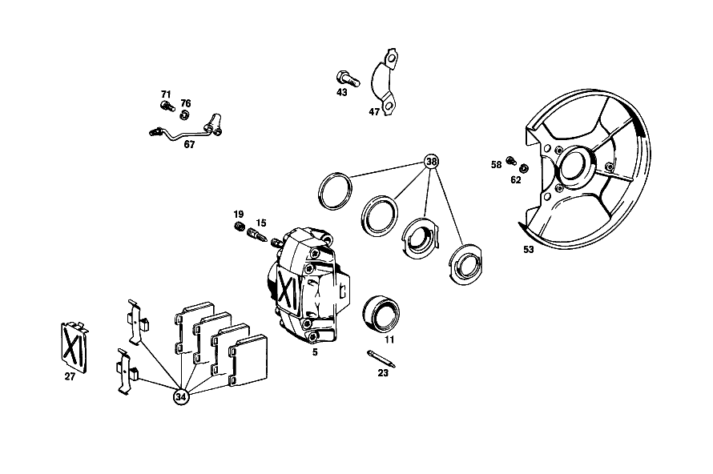

| № | Артикул | Название | Кол. | Примечание | Ограничение |
|---|---|---|---|---|---|
| 5 | A 001 421 81 98 | Тормозной суппорт | 1 | LEFT;TEVES;LESS LINING; IN PAIRS OPTIONAL с [041] REPLACEABLE BY PAIRS ONLY | |
| 5 | A 001 421 82 98 | Тормозной суппорт | 1 | RIGHT,TEVES,LESS LINING; IN PAIRS OPTIONAL с [041] REPLACEABLE BY PAIRS ONLY | |
| 5 | A 001 421 73 98 | СКОБА ТОРМОЗН. МЕХАНИЗМА | 1 | LEFT,BENDIX,LESS LINING; IN PAIRS OPTIONAL с [041] REPLACEABLE BY PAIRS ONLY | |
| 5 | A 001 421 74 98 | СКОБА ТОРМОЗН. МЕХАНИЗМА | 1 | RIGHT,BENDIX,LESS LINING; IN PAIRS OPTIONAL с [041] REPLACEABLE BY PAIRS ONLY | |
| 11 | A 000 421 35 83 | - Поршень | 4 | TEVES [042] RANGE OF DELIVERY INCLUDES: 1 GASEKT KIT 000 586 13 43,015 UP TO CHASSIS 000045 | |
| 11 | A 000 421 44 83 | - Поршень | 4 | BENDIX | |
| 15 | A 000 420 17 55 | - Клапан выпуска воздуха | 2 | TEVES | |
| 19 | A 000 421 71 87 | - КОЛПАЧОК | - | TEVES | |
| 19 | A 000 421 08 87 | - Защитный колпачок | 2 | TEVES | |
| 23 | A 000 991 03 60 | - Фиксирующий штифт | 4 | TEVES | |
| 23 | A 000 991 26 60 | - Фиксирующий штифт | 4 | BENDIX | |
| 27 | A 000 421 02 20 | - Щиток | 2 | TEVES | |
| 27 | A 000 421 05 20 | - Щиток | 2 | BENDIX | |
| 34 | A 001 420 77 20 | К-т тормозных колодок | 1 | К\-Т ДЕТАЛЕЙ | |
| 38 | A 000 586 64 42 | ремкомплект | 2 | TEVES | |
| 38 | A 001 586 00 42 | набор уплотнений | 2 | BENDIX | |
| 43 | A 111 421 03 71 | болт | 4 | ||
| 47 | A 115 994 07 32 | Стопорная шайба | 2 | ||
| 53 | A 108 420 02 44 | ЗАЩИТНАЯ ПАНЕЛЬ | 1 | СЛЕВА | |
| 53 | A 108 420 03 44 | Щиток | 1 | СПРАВА | |
| 58 | N 000912 006040 | Цилиндрич. винт | 4 | ||
| 62 | N 007980 006003 | Пружинное кольцо | 4 | ||
| 67 | A 108 420 00 28 | Тормозная трубка | 1 | СЛЕВА | |
| 67 | A 108 420 01 28 | Тормозная трубка | 1 | СПРАВА | |
| 71 | N 000912 006063 | Цилиндрич. винт | - | ||
| 71 | N 000912 006170 | Цилиндрич. винт | 2 | ||
| 71 | N 000912 006064 | Винт | 2 | ||
| 76 | N 007980 006003 | Пружинное кольцо | 4 | ||
| 79 | A 000 420 46 83 | Тормозной суппорт | 1 | LEFT TEVES, LESS LINING | |
| 87 | A 000 420 16 55 | - Клапан выпуска воздуха | 2 | ||
| 91 | A 000 421 71 87 | - КОЛПАЧОК | - | ||
| 91 | A 000 421 08 87 | - Защитный колпачок | 2 | ||
| 96 | A 000 423 29 83 | - ПОРШЕНЬ | 4 | ||
| 103 | A 000 421 17 91 | - Разжимная пружина | 2 | ||
| 107 | A 000 991 03 60 | - Фиксирующий штифт | 4 | ||
| 111 | A 001 420 79 20 | К-т тормозных колодок | 1 | К\-Т ДЕТАЛЕЙ | |
| 116 | A 000 586 15 43 | набор уплотнений | 2 | ||
| 121 | A 108 420 01 17 | Несущая пластина | 2 | ||
| 126 | A 001 997 34 46 | Уплотнительное кольцо | 2 | ||
| 130 | A 001 997 47 46 | Уплотнительное кольцо | 2 | ||
| 135 | A 110 423 00 79 | уплотнение | 2 | ||
| 138 | A 108 357 00 71 | Болт призонный | 12 | ||
| 143 | N 006797 008120 | Зубчатая шайба | 12 | [402] БОЛЬШЕ НЕ ПОСТАВЛЯЕТСЯ | |
| 147 | N 000934 008010 | Гайка | - | ||
| 147 | N 304032 008006 | Шестигранная гайка | 12 | M8 | |
| 151 | A 126 420 01 20 | Тормозная колодка | 1 | ||
| 156 | A 123 420 00 73 | Болт, особая форма | 2 | ||
| 160 | A 116 423 00 50 | втулка | 2 | ||
| 165 | A 114 586 01 42 | РЕМКОМПЛЕКТ | - | ЗАМОК НАТЯЖНОЙ [412] БОЛЬШЕ НЕ ПОСТАВЛЯЕТСЯ, ЗАКАЗЫВАТЬ ОТДЕЛЬНЫЕ ДЕТАЛИ [043] DELIVER ADDITIONALLY:1 BRAKE CABLE 109 420 07 85 ON THE LEFT,OR 109 420 08 85 ON THE RIGHT | |
| 169 | A 108 423 01 92 | пружина | - | ||
| 169 | A 901 993 13 10 | пружина | 2 | ||
| 173 | A 108 423 07 92 | пружина | 2 | ||
| 177 | A 108 423 00 92 | пружина | 4 | ||
| 181 | A 109 350 00 42 | КОРПУС ПОДШИПНИКА | 1 | СЛЕВА | |
| 185 | N 000007 006206 | - Цилиндрический штифт | 4 | [402] БОЛЬШЕ НЕ ПОСТАВЛЯЕТСЯ | |
| 189 | N 000912 008046 | - Винт | 8 | ||
| 193 | N 007980 008002 | - Пружинное кольцо | 8 | ||
| 197 | N 071412 006100 | - Пресс-масленка | 2 | [402] БОЛЬШЕ НЕ ПОСТАВЛЯЕТСЯ | |
| 202 | A 112 420 18 86 | ДЕРЖАТЕЛЬ | 1 | СЛЕВА | |
| 207 | A 112 357 04 62 | ШАЙБА УПОРНАЯ | 8 | 2.9 MM AS REQUIRED | |
| 212 | A 109 420 00 78 | РЕМКОМПЛЕКТ | 2 | ||
| 216 | A 109 423 02 21 | УПОР ТОРМОЗНОЙ | 1 | СЛЕВА | |
| 216 | A 109 423 03 21 | УПОР ТОРМОЗНОЙ | 1 | СПРАВА | |
| 220 | A 109 420 00 44 | ЗАЩИТНАЯ ПАНЕЛЬ | 1 | СЛЕВА [019] 018 FROM CHASSIS 003549 | |
| 224 | A 109 420 00 86 | ДЕРЖАТЕЛЬ | 2 | [019] 018 FROM CHASSIS 003549 | |
| 228 | A 112 423 10 23 | ДЕРЖАТЕЛЬ | 2 | [019] 018 FROM CHASSIS 003549 | |
| 232 | N 000933 006122 | Винт | - | ||
| 232 | N 304017 006034 | Винт с 6-гранной головкой | 4 | ||
| 236 | N 000127 006202 | Пружинное кольцо | 4 | ||
| 240 | N 000960 012200 | БОЛТ | 2 | ||
| 244 | N 000960 012269 | Винт | 2 | ||
| 248 | A 109 994 00 32 | ПРЕДОХРАНИТЕЛЬ | 2 | ||
| 252 | A 112 423 12 52 | РАСПОРНАЯ ШАЙБА | 4 | 0.1 MM AS REQUIRED | |
| 259 | A 123 420 52 28 | Провод | 1 | СЛЕВА; 4.75X0.7X230 MM [409] ПРИ МОНТАЖЕ ПОДОГНАТЬ ПО МЕСТУ | |
| 263 | A 000 428 06 73 | Удерживающая пружина | 2 | ||
| 267 | A 126 328 01 81 | Резиновая опора | 2 | ||
| 271 | A 198 428 01 41 | ХОМУТ | 2 | ||
| 275 | A 109 990 01 01 | БОЛТ | 2 | [032] 018 FROM CHASSIS 004750; 056 FROM CHASSIS 002081 | |
| 280 | N 000937 008000 | ГАЙКА | 2 | [402] БОЛЬШЕ НЕ ПОСТАВЛЯЕТСЯ [031] 018 UP TO CHASSIS 004749; 056 UP TO CHASSIS 002080 | |
| 284 | A 109 586 00 42 | РЕМКОМПЛЕКТ | 2 | ПОДВЕСКА | |
| 288 | A 000 430 55 30 | УСИЛИТЕЛЬ ТОРМ. ПРИВОДА | 1 | ||
| 301 | A 000 430 36 81 | - Корпус | 1 | ||
| 306 | A 000 431 29 87 | - КОЛПАЧОК | 1 | ||
| 310 | A 002 430 28 01 | Главный цилиндр | 1 | ||
| 315 | A 000 430 38 81 | - КЛАПАН | 1 | ||
| 319 | A 004 997 32 45 | - Уплотнительное кольцо | 1 | ||
| 324 | N 000472 028000 | - Стопорное кольцо | 1 | ||
| 328 | A 000 586 91 43 | ремкомплект | 1 | TEVES | |
| 333 | N 000127 008203 | Пружинное кольцо | 2 | ||
| 337 | N 000934 008013 | Гайка | 2 | ||
| 343 | A 001 431 42 02 | Бак | 1 | TEVES | |
| 348 | A 000 431 43 34 | Сетка | 1 | TEVES | |
| 352 | A 000 431 09 35 | СОЕДИНИТЕЛЬ | 2 | ||
| 356 | A 000 431 54 33 | Запорная крышка | 1 | TEVES | |
| 360 | A 000 997 29 40 | - Уплотнительное кольцо | 1 | ||
| 364 | A 001 542 63 17 | Ремк-т датчика уровня | 1 | TEVES, FRONT SUPPLY CHAMBER | |
| 368 | A 000 431 75 60 | - Уплотнение | 2 | ||
| 372 | A 000 431 16 33 | Колпачок | 2 | [402] БОЛЬШЕ НЕ ПОСТАВЛЯЕТСЯ | |
| 376 | A 000 431 82 60 | уплотнение | 2 | ||
| 380 | A 000 431 00 62 | Брызгозащитная панель | 2 | ||
| 385 | A 000 586 01 43 | ремкомплект | 1 | РАСШИРИТ. БАЧОК НА ГЛАВН. ЦИЛИНДРЕ Рулевое управление: Влево | |
| 389 | A 110 430 00 45 | ФЛАНЕЦ | - | [005] 016 UP TO CHASSIS 000978 | |
| 393 | N 000835 008064 | - Винт | 1 | ||
| 398 | A 108 431 00 80 | ПРОКЛАДКА УПЛОТНИТЕЛЬНАЯ | 1 | УСИЛИТЕЛЬ ТОРМОЗНОГО ПРИВОДА К МОТОРНОМУ ЩИТУ | |
| 404 | A 111 430 07 29 | ПРОВОД | 1 | Рулевое управление: Влево | |
| 409 | N 915017 012200 | Гайка | 1 | Рулевое управление: Вправо | |
| 414 | A 000 431 36 07 | Клапан | 1 | [005] 016 UP TO CHASSIS 000978 | |
| 418 | A 111 435 02 27 | ОТРАЖАТЕЛЬ | 1 | [402] БОЛЬШЕ НЕ ПОСТАВЛЯЕТСЯ [005] 016 UP TO CHASSIS 000978 | |
| 422 | A 000 435 21 82 | Шланг | NB | [404] ЗАКАЗЫВАТЬ ПОГОННЫМИ МЕТРАМИ | |
| 427 | A 123 420 55 28 | Провод | 1 | FROM BRAKE MASTER CYLINDER TO LEFT FRONT WHEEL Рулевое управление: Влево [409] ПРИ МОНТАЖЕ ПОДОГНАТЬ ПО МЕСТУ | |
| 431 | A 123 420 70 28 | Провод | 1 | FROM BRAKE MASTER CYLINDER TO RIGHT FRONT WHEEL; 4.75X0.7X1495MM Рулевое управление: Влево [409] ПРИ МОНТАЖЕ ПОДОГНАТЬ ПО МЕСТУ | |
| 436 | A 123 420 86 28 | Провод | 1 | FROM MASTER CYLINDER TO BRAKE PRESSURE REGULATOR Рулевое управление: Влево [409] ПРИ МОНТАЖЕ ПОДОГНАТЬ ПО МЕСТУ | |
| 442 | A 000 431 35 12 | Регулирующий клапан | 1 | ||
| 451 | N 000127 008203 | Пружинное кольцо | 2 | ||
| 455 | N 000934 008013 | Гайка | 2 | ||
| 481 | A 123 420 60 28 | Провод | 1 | FROM BRAKE PRESSURE REGULATOR TO BRACKET, LEFT REAR; 580 MM [409] ПРИ МОНТАЖЕ ПОДОГНАТЬ ПО МЕСТУ | |
| 485 | A 123 420 66 28 | Провод | 1 | FROM BRAKE PRESSURE REGULATOR TO BRACKET, RIGHT REAR [409] ПРИ МОНТАЖЕ ПОДОГНАТЬ ПО МЕСТУ | |
| 489 | A 123 428 05 35 | Тормозной шланг | 2 | ||
| 493 | A 000 428 06 73 | Удерживающая пружина | 2 | ||
| 496 | A 110 428 00 73 | Стопорная шайба | 2 | ||
| 500 | N 000933 006103 | Винт | - | ||
| 500 | N 304017 006018 | Винт с 6-гранной головкой | 2 | M6X12 | |
| 504 | N 000137 006204 | Пружинная шайба | 2 | ||
| 508 | A 000 990 22 91 | ГАЙКОДЕРЖАТЕЛЬ | - | ||
| 508 | A 001 990 67 91 | Гайкодержатель | 2 | [415] ПРИМЕЧ. ПО ЗАМЕНЕ ПРИМЕНИМО ТОЛЬКО ДЛЯ СТОЯЩИХ РЯДОМ ПОЗИЦИЙ | |
| 512 | A 000 428 58 35 | ТОРМОЗНОЙ ШЛАНГ | 2 | ||
| 516 | A 001 997 14 81 | резиновая втулка | 2 | ||
| 520 | A 000 988 33 78 | Скоба | 1 | ||
| 524 | N 072571 001035 | Хомут | - | Рулевое управление: Вправо | |
| 524 | A 127 995 00 20 | хомут | 1 | Рулевое управление: Вправо | |
| 527 | A 000 987 09 32 | Шланг | 1 | 25 MM Рулевое управление: Вправо [404] ЗАКАЗЫВАТЬ ПОГОННЫМИ МЕТРАМИ | |
| 534 | A 110 476 00 84 | Резиновое крепление | 8 | ||
| 537 | A 000 987 38 41 | КОЛЬЦО РЕЗИНОВОЕ | 5 | ||
| 542 | A 110 995 01 01 | ХОМУТ | 3 | Рулевое управление: Влево | |
| 545 | A 094 995 15 00 | хомут | - | Рулевое управление: Влево | |
| 545 | A 110 995 04 01 | хомут | 1 | Рулевое управление: Влево | |
| 548 | A 110 995 00 22 | хомут | 6 | ||
| 552 | A 108 995 05 20 | хомут | 2 | ||
| 555 | A 120 420 02 27 | Т-образный винт | 5 | ||
| 559 | A 126 328 01 81 | Резиновая опора | 5 | ||
| 563 | A 110 428 01 85 | Демпферная лента | 3 | Рулевое управление: Вправо | |
| 568 | A 108 420 01 88 | Тяга собачки | 1 | Рулевое управление: Влево | |
| 574 | A 112 427 00 86 | - Демпфирующее кольцо | 1 | ||
| 583 | A 108 420 02 77 | НАПРАВЛЯЮЩАЯ | 1 | Рулевое управление: Вправо | |
| 587 | A 120 427 01 15 | - Собачка | 1 | ||
| 591 | A 120 993 00 20 | - пружина | 1 | ||
| 596 | A 000 991 00 81 | - Заклепка | 1 | ||
| 600 | A 108 427 00 81 | КОРПУС | 1 | Рулевое управление: Вправо [402] БОЛЬШЕ НЕ ПОСТАВЛЯЕТСЯ | |
| 605 | A 108 427 00 84 | ВКЛАДКА | 1 | Рулевое управление: Вправо | |
| 609 | A 121 427 00 59 | УПЛОТНИТЕЛЬНАЯ ШАЙБА | 1 | Рулевое управление: Вправо | |
| 613 | A 110 427 01 42 | ШКИВ ТРОСИКА | 2 | Рулевое управление: Вправо | |
| 617 | A 110 427 02 46 | ПЛАСТИНА НАПРАВЛЯЮЩАЯ | 1 | Рулевое управление: Вправо | |
| 620 | A 187 427 01 53 | РАСПОРН. ТРУБКА | 1 | Рулевое управление: Вправо [402] БОЛЬШЕ НЕ ПОСТАВЛЯЕТСЯ | |
| 624 | A 180 427 01 74 | Палец | 1 | Рулевое управление: Вправо | |
| 628 | N 000137 008204 | Пружинная шайба | - | Рулевое управление: Вправо | |
| 628 | N 000137 008212 | Пружинная шайба | 1 | Рулевое управление: Вправо | |
| 633 | A 110 427 01 53 | РАСПОРН. ТРУБКА | 1 | CABLE PULLEY TO BRACKET Рулевое управление: Вправо | |
| 637 | A 111 420 32 85 | Тормозной трос | 1 | Рулевое управление: Влево | |
| 641 | A 109 420 05 86 | ДЕРЖАТЕЛЬ | 1 | FRONT BRAKE CABLE TO FIRE WALL Рулевое управление: Вправо | |
| 649 | A 120 991 00 61 | Просечной штифт | 1 | ||
| 658 | A 110 427 00 96 | Манжета | 1 | GUIDE TUBE BEARING BRACKET TO COWL Рулевое управление: Влево | |
| 663 | A 109 420 00 90 | НАПРАВЛЯЮЩАЯ | 1 | Рулевое управление: Влево | |
| 668 | N 073379 006101 | Шланг | 1 | 110 MM Рулевое управление: Влево [404] ЗАКАЗЫВАТЬ ПОГОННЫМИ МЕТРАМИ | |
| 673 | A 112 420 04 12 | РЫЧАГ ТОРМОЗА | 1 | ||
| 677 | A 110 427 00 50 | - ВТУЛКА | 1 | ||
| 681 | A 112 427 03 12 | НАПРАВЛ. ЭЛЕМЕНТ | 1 | ||
| 685 | N 000961 010012 | Винт | 1 | ||
| 689 | N 912004 010102 | Пружинное кольцо | 1 | ||
| 690 | N 000961 010012 | Винт | 1 | ||
| 691 | N 912004 010102 | Пружинное кольцо | 1 | ||
| 692 | N 000125 010504 | ШАЙБА | 1 | ||
| 693 | A 109 420 01 85 | Тормозной трос | 1 | ||
| 694 | N 000094 003005 | ШПЛИНТ | 1 | ФИКСАТОР ТОРМОЗНОГО ТРОСА | |
| 695 | A 110 420 14 42 | Рычаг торм.механизма | 1 | ||
| 696 | A 108 420 06 73 | БОЛТ | 1 | ||
| 700 | A 110 427 01 13 | Рычаг | 1 | ||
| 704 | N 001434 008031 | БОЛТ | 1 | ||
| 708 | A 108 427 00 72 | гайка | 1 | ||
| 712 | N 001434 006034 | Палец | 1 | ||
| 716 | A 110 993 11 10 | пружина | 1 | ||
| 721 | A 110 427 09 41 | ДЕРЖАТЕЛЬ | 1 | ||
| 726 | A 109 420 07 85 | ТРОС. ПРИВОД СТОЯН. ТОРМ. | 1 | СЗАДИ СЛЕВА | |
| 731 | A 109 420 08 85 | ТРОС. ПРИВОД СТОЯН. ТОРМ. | 1 | СЗАДИ СПРАВА | |
| 736 | A 109 427 01 96 | МАНЖЕТА | 2 | ||
| 740 | A 109 427 01 34 | ПАНЕЛЬ | 2 | ТРУБА НЕСУЩАЯ | |
| A 000 421 71 98 | СКОБА ТОРМОЗН. МЕХАНИЗМА | - | |||
| A 001 421 00 98 | СКОБА ТОРМОЗН. МЕХАНИЗМА | - | |||
| A 001 421 02 98 | СКОБА ТОРМОЗН. МЕХАНИЗМА | - | [002] 015 FROM CHASSIS 002127 | ||
| A 000 421 72 98 | СКОБА ТОРМОЗН. МЕХАНИЗМА | - | |||
| A 001 421 01 98 | СКОБА ТОРМОЗН. МЕХАНИЗМА | - | |||
| A 001 421 03 98 | СКОБА ТОРМОЗН. МЕХАНИЗМА | - | [002] 015 FROM CHASSIS 002127 | ||
| A 000 421 02 91 | - Разжимная пружина | 2 | TEVES | ||
| A 000 421 12 91 | - Разжимная пружина | 4 | BENDIX [417] БОЛЬШЕ НЕ ПОСТАВЛЯЕТСЯ, ЗАКАЗЫВАТЬ КОМПЛЕКТ ПОСТАВКИ | ||
| A 000 421 02 73 | - ПРЕДОХРАНИТЕЛЬ | - | BENDIX | ||
| A 000 421 05 73 | - предохранитель | 2 | BENDIX | ||
| A 000 421 03 73 | - ПРЕДОХРАНИТЕЛЬ | - | |||
| A 000 421 05 73 | - предохранитель | 2 | BENDIX | ||
| A 000 420 46 55 | - Клапан выпуска воздуха | 2 | BENDIX | ||
| A 000 420 29 83 | СКОБА ТОРМОЗН. МЕХАНИЗМА | - | |||
| A 000 420 38 83 | СКОБА ТОРМОЗН. МЕХАНИЗМА | - | [002] 015 FROM CHASSIS 002127 | ||
| A 000 420 30 83 | СКОБА ТОРМОЗН. МЕХАНИЗМА | - | |||
| A 000 420 39 83 | СКОБА ТОРМОЗН. МЕХАНИЗМА | - | [002] 015 FROM CHASSIS 002127 | ||
| A 000 420 47 83 | Тормозной суппорт | 1 | RIGHT,TEVES,LESS LINING | ||
| A 000 420 02 17 | ПЛАСТИНА ТОРМ. МЕХ-МА | - | |||
| A 115 420 11 89 | Разжимной механ. тормоза | 2 | [043] DELIVER ADDITIONALLY:1 BRAKE CABLE 109 420 07 85 ON THE LEFT,OR 109 420 08 85 ON THE RIGHT | ||
| A 108 427 00 74 | Цилиндрический шрифт | 2 | [043] DELIVER ADDITIONALLY:1 BRAKE CABLE 109 420 07 85 ON THE LEFT,OR 109 420 08 85 ON THE RIGHT | ||
| A 000 423 06 92 | пружина | 2 | |||
| A 000 423 21 93 | ПРУЖИНА | 4 | |||
| A 109 350 01 42 | КОРПУС ПОДШИПНИКА | 1 | СПРАВА | ||
| A 112 420 17 86 | ДЕРЖАТЕЛЬ | 1 | СПРАВА | ||
| A 112 358 22 22 | ВКЛАДЫШ ПОДШИПНИКА | - | [020] ПО ОТДЕЛЬНОСТИ БОЛЬШЕ НЕ ПОСТАВЛЯЕТСЯ,ТОЛЬКО В РЕМ.КОМПЛЕКТЕ | ||
| A 112 358 00 60 | УПЛОТНИТ. КОЛЬЦО | - | [020] ПО ОТДЕЛЬНОСТИ БОЛЬШЕ НЕ ПОСТАВЛЯЕТСЯ,ТОЛЬКО В РЕМ.КОМПЛЕКТЕ | ||
| A 112 997 06 45 | УПЛОТНИТ. КОЛЬЦО | - | [020] ПО ОТДЕЛЬНОСТИ БОЛЬШЕ НЕ ПОСТАВЛЯЕТСЯ,ТОЛЬКО В РЕМ.КОМПЛЕКТЕ | ||
| A 112 357 05 62 | ШАЙБА УПОРНАЯ | 8 | 3.0 MM AS REQUIRED | ||
| A 112 357 06 62 | ШАЙБА УПОРНАЯ | 8 | 3.1 MM AS REQUIRED | ||
| A 112 357 11 62 | ШАЙБА УПОРНАЯ | 8 | 3.2 MM AS REQUIRED | ||
| A 109 420 01 44 | ЗАЩИТНАЯ ПАНЕЛЬ | 1 | СПРАВА [019] 018 FROM CHASSIS 003549 | ||
| A 112 423 13 52 | РАСПОРНАЯ ШАЙБА | 4 | 0.5 MM AS REQUIRED | ||
| A 112 423 14 52 | РАСПОРНАЯ ШАЙБА | 4 | 0.75 MM AS REQUIRED | ||
| A 112 423 15 52 | РАСПОРНАЯ ШАЙБА | 4 | 1.00 MM AS REQUIRED | ||
| N 000960 012025 | БОЛТ | 2 | BRAKE STAY TO BEARING HOUSING | ||
| N 000985 012004 | ГАЙКА | 2 | BRAKE STAY TO BEARING HOUSING | ||
| A 123 420 52 28 | Провод | 1 | СПРАВА; 4.75X0.7X230 MM [409] ПРИ МОНТАЖЕ ПОДОГНАТЬ ПО МЕСТУ | ||
| N 000931 008161 | Винт | - | [031] 018 UP TO CHASSIS 004749; 056 UP TO CHASSIS 002080 | ||
| A 120 323 00 67 | ТАРЕЛКА | - | [020] ПО ОТДЕЛЬНОСТИ БОЛЬШЕ НЕ ПОСТАВЛЯЕТСЯ,ТОЛЬКО В РЕМ.КОМПЛЕКТЕ | ||
| A 112 323 00 44 | РЕЗИНОВЫЙ УПОР | - | [020] ПО ОТДЕЛЬНОСТИ БОЛЬШЕ НЕ ПОСТАВЛЯЕТСЯ,ТОЛЬКО В РЕМ.КОМПЛЕКТЕ | ||
| A 112 991 01 40 | РАСПОРН. ТРУБКА | - | [020] ПО ОТДЕЛЬНОСТИ БОЛЬШЕ НЕ ПОСТАВЛЯЕТСЯ,ТОЛЬКО В РЕМ.КОМПЛЕКТЕ | ||
| A 120 323 00 44 | РЕЗИНОВЫЙ УПОР | - | [020] ПО ОТДЕЛЬНОСТИ БОЛЬШЕ НЕ ПОСТАВЛЯЕТСЯ,ТОЛЬКО В РЕМ.КОМПЛЕКТЕ | ||
| N 000094 002006 | ШПЛИНТ | 2 | [031] 018 UP TO CHASSIS 004749; 056 UP TO CHASSIS 002080 | ||
| N 913002 008004 | Гайка | 1 | M8 [032] 018 FROM CHASSIS 004750; 056 FROM CHASSIS 002081 | ||
| A 001 586 41 43 | ремкомплект | 1 | |||
| A 001 430 89 01 | Главный цилиндр | 1 | |||
| A 003 430 22 01 | Главный цилиндр | 1 | BENDIX | ||
| A 001 586 93 43 | ремкомплект | 1 | TEVES | ||
| A 001 586 55 43 | РЕМКОМПЛЕКТ | 1 | BENDIX | ||
| A 000 431 45 02 | Бак | 1 | |||
| A 000 987 03 45 | - Пробка | 1 | |||
| N 900288 010001 | - Хомут | 1 | |||
| A 000 431 43 34 | - Сетка | 1 | |||
| A 000 431 54 33 | - Запорная крышка | 1 | |||
| A 000 997 29 40 | - Уплотнительное кольцо | 1 | |||
| A 000 431 64 02 | БАЧОК | - | |||
| A 001 431 42 02 | Бак | 1 | BENDIX | ||
| A 000 431 43 34 | - Сетка | 1 | |||
| A 000 431 54 33 | - Запорная крышка | 1 | BENDIX | ||
| A 000 431 97 60 | - УПЛОТНИТ. КОЛЬЦО | 1 | BENDIX | ||
| A 002 542 99 17 | Датчик уровня | 1 | TEVES, REAR SUPPLY CHAMBER | ||
| A 000 431 82 60 | - уплотнение | 2 | |||
| A 000 586 02 43 | РЕМКОМПЛЕКТ | 1 | РАСШИРИТ. БАЧОК НА ГЛАВН. ЦИЛИНДРЕ Рулевое управление: Вправо | ||
| A 108 430 01 45 | ФЛАНЕЦ | 1 | Рулевое управление: Влево | ||
| A 110 430 01 45 | ФЛАНЕЦ | 1 | Рулевое управление: Вправо | ||
| N 000137 008204 | Пружинная шайба | - | |||
| N 000137 008212 | Пружинная шайба | 4 | ПРОМЕЖУТОЧ.ФЛАНЕЦ К ТОРМОЗНОМУ МЕХАНИЗМУ | ||
| N 000934 008013 | Гайка | 4 | ПРОМЕЖУТОЧ.ФЛАНЕЦ К ТОРМОЗНОМУ МЕХАНИЗМУ | ||
| N 000137 008204 | Пружинная шайба | - | |||
| N 000137 008212 | Пружинная шайба | 3 | УСИЛИТЕЛЬ ТОРМОЗНОГО ПРИВОДА К МОТОРНОМУ ЩИТУ | ||
| N 000934 008013 | Гайка | 3 | УСИЛИТЕЛЬ ТОРМОЗНОГО ПРИВОДА К МОТОРНОМУ ЩИТУ | ||
| A 094 295 01 00 | болт | - | |||
| N 000936 008012 | Гайка | 1 | |||
| N 000137 008204 | Пружинная шайба | - | |||
| N 000137 008212 | Пружинная шайба | 1 | |||
| A 112 430 03 29 | ПРОВОД | 1 | Рулевое управление: Вправо | ||
| N 915036 012101 | Полый болт | 1 | Рулевое управление: Влево | ||
| A 094 990 80 03 | Полый болт | 1 | Рулевое управление: Влево [005] 016 UP TO CHASSIS 000978 | ||
| A 199 990 00 88 | КОЛЬЦ. ЭЛЕМЕНТ | 1 | Рулевое управление: Влево [005] 016 UP TO CHASSIS 000978 | ||
| N 007603 016403 | Уплотнительное кольцо | 1 | Рулевое управление: Влево [005] 016 UP TO CHASSIS 000978 | ||
| N 900262 005100 | Стяжка | 6 | [005] 016 UP TO CHASSIS 000978 | ||
| N 900263 005000 | Лента | 6 | [005] 016 UP TO CHASSIS 000978 [404] ЗАКАЗЫВАТЬ ПОГОННЫМИ МЕТРАМИ | ||
| A 000 995 00 65 | ХОМУТ | 1 | Рулевое управление: Вправо [005] 016 UP TO CHASSIS 000978 | ||
| A 111 420 81 28 | ПРОВОД | - | Рулевое управление: Вправо | ||
| A 109 420 18 28 | ПРОВОД | 1 | FROM BRAKE MASTER CYLINDER TO LEFT FRONT WHEEL Рулевое управление: Вправо | ||
| A 123 420 51 28 | Провод | 1 | FROM BRAKE MASTER CYLINDER TO RIGHT FRONT WHEEL; 4.75X0.7X210 MM Рулевое управление: Вправо [409] ПРИ МОНТАЖЕ ПОДОГНАТЬ ПО МЕСТУ | ||
| A 123 420 67 28 | Провод | 1 | FROM MASTER CYLINDER TO ADAPTER FITTING Рулевое управление: Вправо [409] ПРИ МОНТАЖЕ ПОДОГНАТЬ ПО МЕСТУ | ||
| A 121 429 01 34 | 6-гр. распорный элемент | 1 | M10 Рулевое управление: Вправо | ||
| A 123 420 89 28 | Провод | 1 | ADAPTER FITTING TO BRAKE PRESSURE REGULATOR AND TO DISTRIBUTOR, RESP.; 4.75 X 0.7 X 4000 MM Рулевое управление: Вправо [409] ПРИ МОНТАЖЕ ПОДОГНАТЬ ПО МЕСТУ | ||
| A 000 428 06 73 | Удерживающая пружина | 2 | |||
| A 201 428 00 40 | Держатель | 2 | Рулевое управление: Вправо | ||
| N 007976 004217 | Шуруп | - | |||
| N 914128 004303 | Шуруп | 3 | 4.8X9.5 MM | ||
| N 007976 005203 | Шуруп | 1 | |||
| N 007976 006203 | Шуруп | 3 | B6,3X13 | ||
| A 094 990 68 10 | Пружинное кольцо | 5 | |||
| N 000934 006007 | Гайка | 5 | |||
| A 120 476 01 84 | Резиновое крепление | - | [039] НЕ ИСПОЛЬЗУЕТСЯ | ||
| A 120 476 01 84 | Резиновое крепление | 1 | |||
| A 111 420 08 88 | ТЯГА ЗАЩЕЛКИ | 1 | Рулевое управление: Вправо | ||
| A 110 420 04 77 | НАПРАВЛЯЮЩАЯ | 1 | Рулевое управление: Влево | ||
| A 108 427 01 81 | КОРПУС | 1 | Рулевое управление: Вправо [402] БОЛЬШЕ НЕ ПОСТАВЛЯЕТСЯ | ||
| N 000931 006005 | БОЛТ | 3 | КОРПУС НА ПЕРЕГОРОДКЕ Рулевое управление: Вправо | ||
| N 000137 006204 | Пружинная шайба | 3 | КОРПУС НА ПЕРЕГОРОДКЕ Рулевое управление: Вправо | ||
| A 000 990 71 91 | Гайкодержатель | 3 | КОРПУС НА ПЕРЕГОРОДКЕ Рулевое управление: Вправо | ||
| N 000931 006016 | БОЛТ | 1 | CABLE PULLEY TO BRACKET Рулевое управление: Вправо | ||
| A 094 990 68 10 | Пружинное кольцо | 1 | CABLE PULLEY TO BRACKET Рулевое управление: Вправо | ||
| N 000934 006007 | Гайка | 1 | CABLE PULLEY TO BRACKET Рулевое управление: Вправо | ||
| A 108 420 05 85 | Тормозной трос | 1 | Рулевое управление: Вправо | ||
| N 000933 006083 | Винт | 2 | GUIDE TUBE BEARING BRACKET TO COWL [023] 016 UP TO CHASSIS 002504; 018 UP TO CHASSIS 003789; 056 UP TO CHASSIS 000409 | ||
| N 000933 006102 | Винт | - | |||
| N 304017 006016 | Винт с 6-гранной головкой | 2 | GUIDE TUBE BEARING BRACKET TO COWL; M6X16 | ||
| A 111 427 02 84 | ВКЛАДКА | 2 | GUIDE TUBE BEARING BRACKET TO COWL Рулевое управление: Влево [023] 016 UP TO CHASSIS 002504; 018 UP TO CHASSIS 003789; 056 UP TO CHASSIS 000409 | ||
| N 000125 006407 | ШАЙБА | 2 | GUIDE TUBE BEARING BRACKET TO COWL | ||
| A 094 990 68 10 | Пружинное кольцо | 3 | GUIDE TUBE BEARING BRACKET TO COWL Рулевое управление: Влево [023] 016 UP TO CHASSIS 002504; 018 UP TO CHASSIS 003789; 056 UP TO CHASSIS 000409 | ||
| N 000934 006007 | Гайка | 1 | GUIDE TUBE BEARING BRACKET TO COWL Рулевое управление: Влево [023] 016 UP TO CHASSIS 002504; 018 UP TO CHASSIS 003789; 056 UP TO CHASSIS 000409 | ||
| N 000094 003000 | ШПЛИНТ | 1 | CENTRAL BRAKE CABLE TO CABLE GUIDE | ||
| N 000094 002059 | Шплинт | 1 | 2X14 MM | ||
| A 094 990 30 05 | Шплинт | 1 | 2,0X14 | ||
| N 000094 002059 | Шплинт | 1 | 2X14 MM | ||
| A 094 990 30 05 | Шплинт | 1 | для SCREW; 2,0X14 | ||
| N 000094 001503 | ШПЛИНТ | 1 | |||
| N 000094 003226 | Шплинт | 1 | INTERMEDIATE LEVER TO TROUGH\-LINE GUIDE | ||
| N 000933 006102 | Винт | - | |||
| N 304017 006016 | Винт с 6-гранной головкой | 2 | RELEASE SPRING RETAINER TO TUNNEL; M6X16 | ||
| A 094 990 68 10 | Пружинное кольцо | 2 | RELEASE SPRING RETAINER TO TUNNEL | ||
| N 000934 006007 | Гайка | 2 | RELEASE SPRING RETAINER TO TUNNEL | ||
| A 109 420 03 85 | ТРОС. ПРИВОД СТОЯН. ТОРМ. | - | |||
| A 109 420 04 85 | ТРОС. ПРИВОД СТОЯН. ТОРМ. | - | |||
| N 000933 006102 | Винт | - | |||
| N 304017 006016 | Винт с 6-гранной головкой | 4 | AT REAR AXLE TUBE; M6X16 | ||
| A 094 990 68 10 | Пружинное кольцо | 4 | AT REAR AXLE TUBE | ||
| N 900262 009100 | Стяжка | 2 | REAR BRAKE CABLE TO REAR AXLE TUBE | ||
| N 900263 009000 | Лента | 2 | REAR BRAKE CABLE TO REAR AXLE TUBE [404] ЗАКАЗЫВАТЬ ПОГОННЫМИ МЕТРАМИ |
Позиций: 320 · подписано на схемах: 185 · колесо — плавный зум в курсор, перетаскивание — пан, двойной клик — зум, клик по артикулу — скопировать.